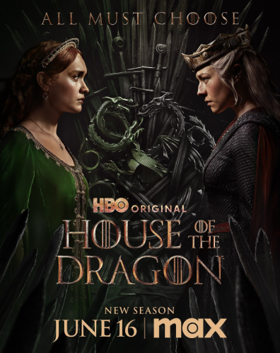
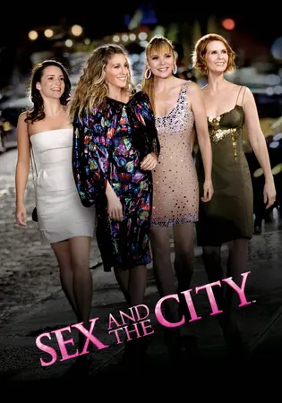

Nesta página estão as séries que eu (Julia Simão) ando assistindo no último mês.
Menção honrosa a uma série que minha querida mamãe está assistindo porque eu obriguei ela a ver.

House of the Dragons.
Série sobre a casa targaryen situada 500 anos antes de Game of Thrones. O conflito entre os diferentes ramos da família - os Blacks e os Greens - .
The Boys.
Um mundo semelhante ao nosso, mas onde alguns humanos podem nascer com super-poderes e como seria o cenário político e social de um mundo como esse. E se, os super-heróis fossem do mau?

Sex and the City.
Um grupo de amigas com 30 anos desbravam a vida romântica em Nova York. Cada uma vê relacionamentos de maneira diferente. E se metem em várias situações loucas!
Demon Slayer.
Em um mundo onde existem demônios, acompanhamos um menino chamado Tanjiro ao tentar se tornar um "demon slayer" após sua família ser morta e sua irmã ser tornada em um demônio.
**Gilmore Girls.
Lorelai e Rory. Mãe e Filha. Lorelai fica grávida aos 16 anos e se separa de seus pais. Acompanhamos a vida da Mãe e Filha anos depois.